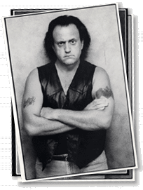

For further proof on the evidence presented above check out
the following on Sunrisestudios.com:
1. Bring up Shutout! on the studio's filmography and you will find that the bums at Sunrise make no mention of Loretta Fisher at all. One would expect some sort of a tribute to the actress at the very least. The studio is obviously pretending that she never existed at all because it has something to hide.
2. Check out Path To Gold in the studio's filmography and you will find that Elaine Varsi receives no tribute for her work in the Sunrise film. One would think that a studio with nothing to hide would put a photo of her in the Actor's Biography section of their website. You can look at  Willis Goldner, another fallen Sunrise star, and see the tribute that the studio gives him. It smells like a cover-up to me.
3. For Martin Stevens' revengeful ways check out mention in John Milton's Diary - entry Day Thirty-Eight - of some strange, fatal "accidents" in the commissary. I believe that Martin Stevens is behind these events. Especially, since Hawken Jones, DP from the Stab films, died on his watch. Perhaps, Martin blames Hawken for his son Phil's death.
For further proof on the evidence of SunLies Studio's dispicable and horrific ways presented in my first entry check out the following on their website Sunrisestudios.com-
1. In John Milton's diary, you will find hidden within the "Day Thirty" entry a very special love message to Beverly Choi. He calls her the best agent in the industry. Anyone in the know understands that this is a crock of you know what. Only a lover would say such a thing in a public setting. This entry further proves my theory that Milton and Choi are rolling in sack together. What a disgrace!